CH12-011 — images
【不安】朝が怖い人へ｜朝の憂うつが軽くなる
ep
CH12
Script Viewer
snapshot
guide
台本
音声
サムネ
画像
CH12-011
画像
updated_at: 2026-01-13T09:30:14.308996Z
run_id:
CH12-011
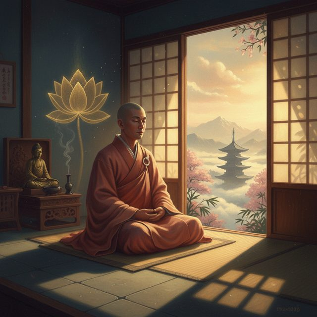
CH12-011
朝の重い気分の体験
CH12-011
意志の弱さではない
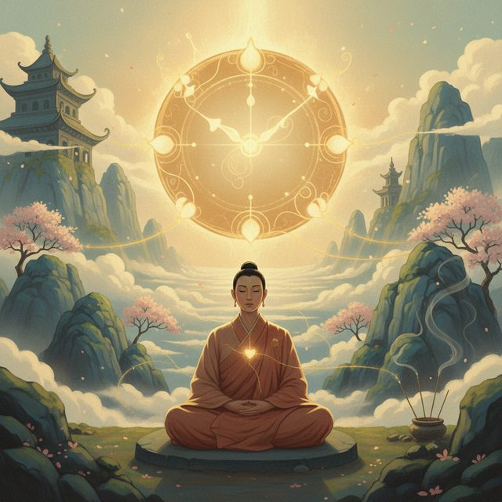
CH12-011
体の自然なリズム
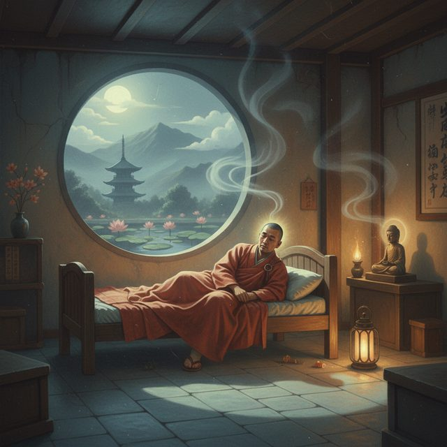
CH12-011
夜中の目覚めと朝のもたつき
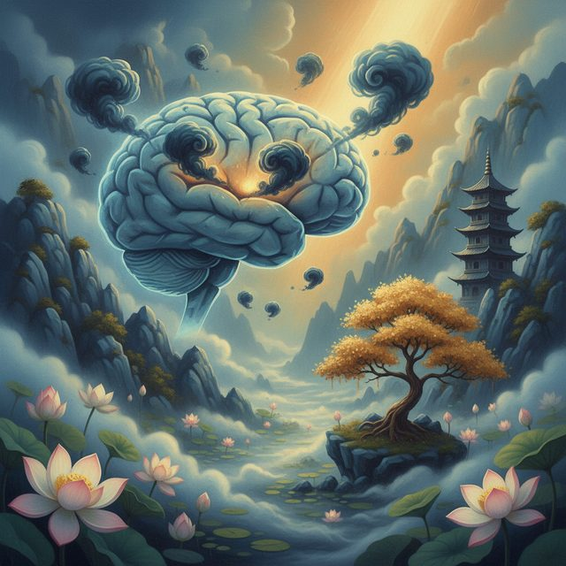
CH12-011
考え事が頭をよぎる
CH12-011
脱水状態の影響
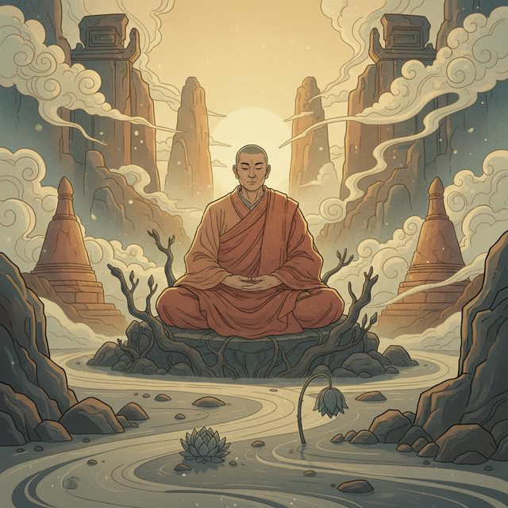
CH12-011
水分不足による重だるさ
CH12-011
コップ一杯の水の力
CH12-011
体が発するサイン
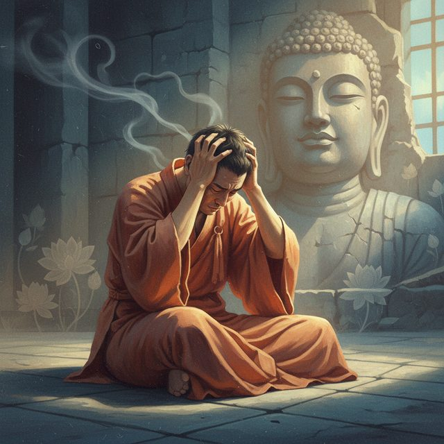
CH12-011
自己責めのクセ
CH12-011
感覚を受け止める
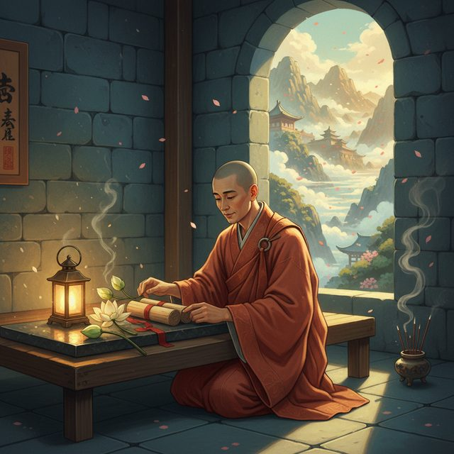
CH12-011
今夜からの小さな準備
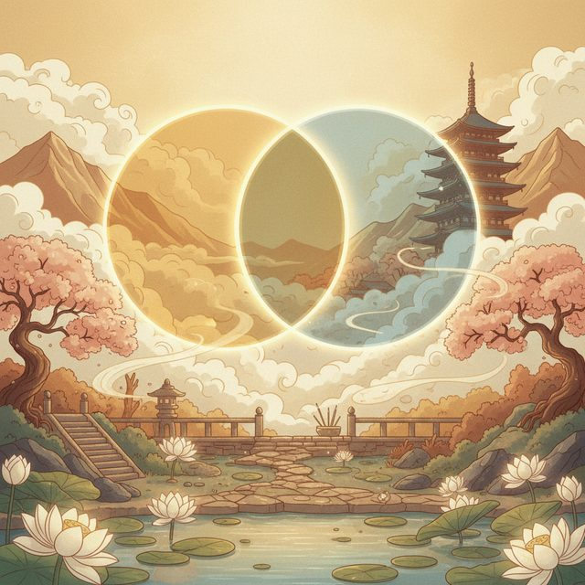
CH12-011
心と体の深い結びつき
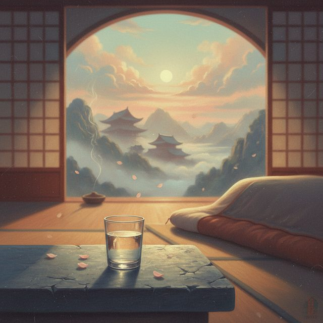
CH12-011
枕元の水の準備
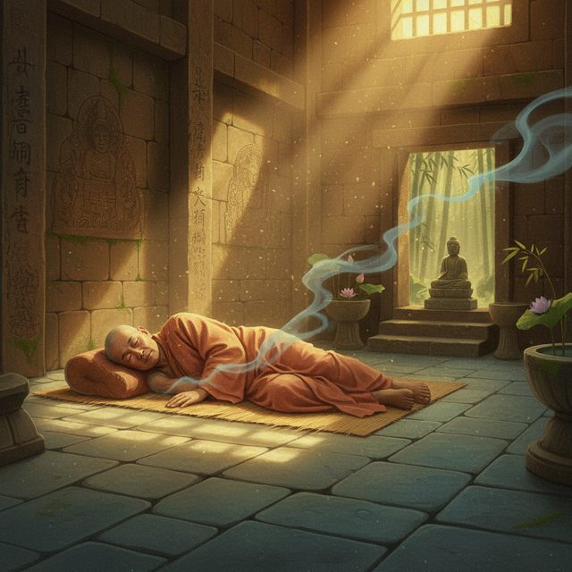
CH12-011
寝ている間の水分損失
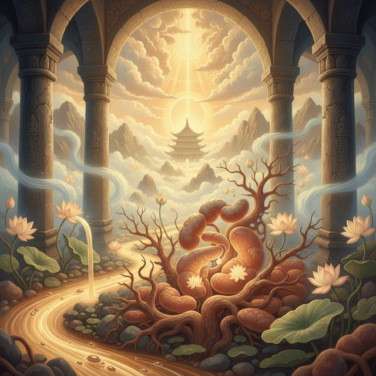
CH12-011
水が体を起動させる
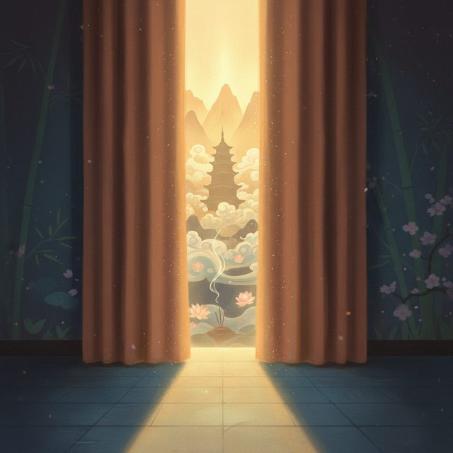
CH12-011
カーテンを10cm開ける
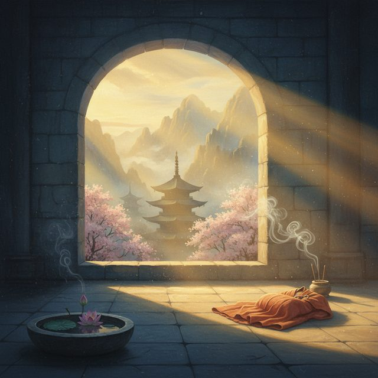
CH12-011
光の自然な合図
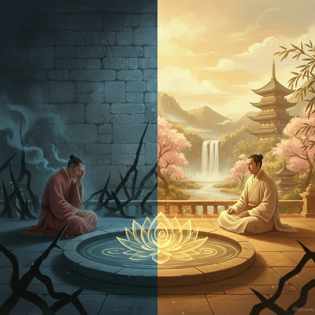
CH12-011
真っ暗な部屋の問題
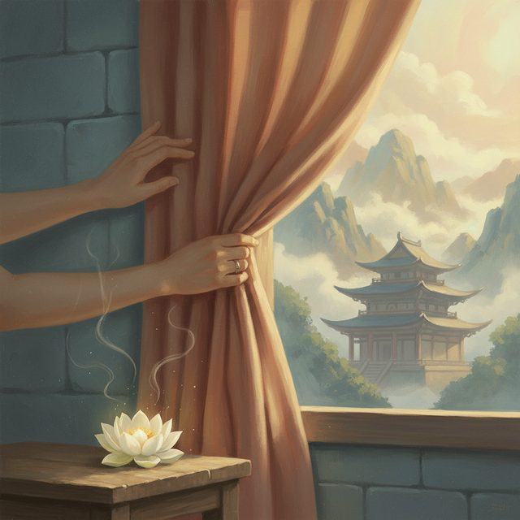
CH12-011
光の調整と安心
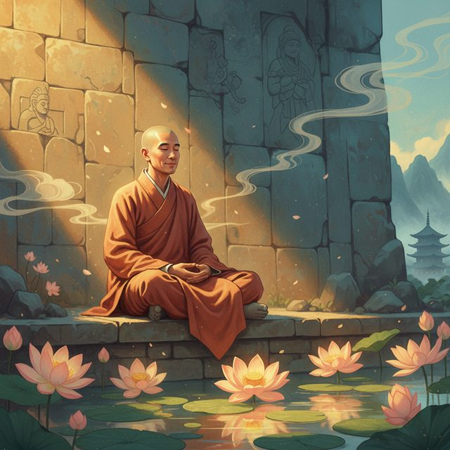
CH12-011
準備を信じて待つ
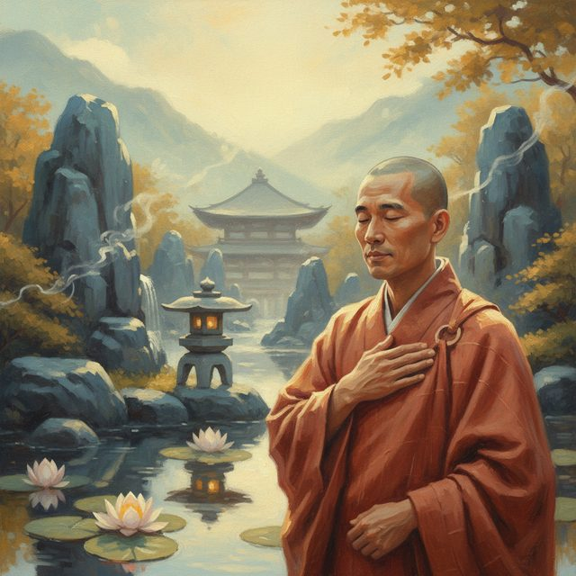
CH12-011
自分への気配り
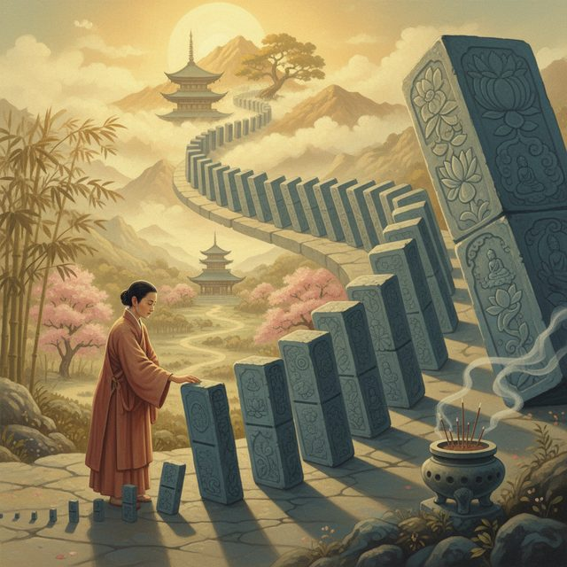
CH12-011
小さな行為の大きな力
CH12-011
明日の朝の一手
CH12-011
布団から出る瞬間
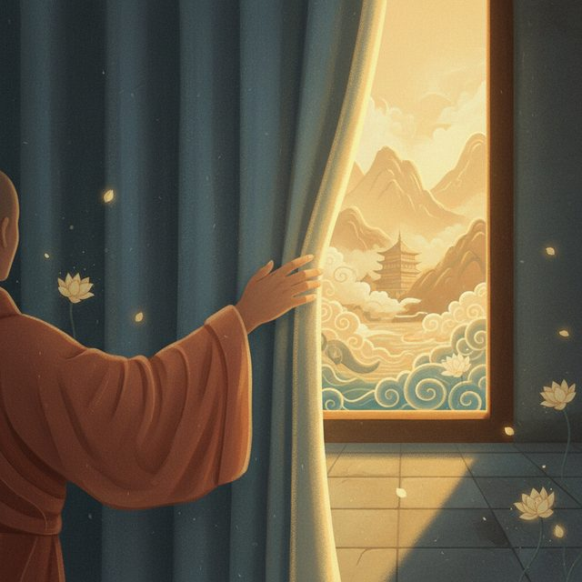
CH12-011
窓へ向かう動作
CH12-011
深呼吸と光の感覚
CH12-011
一口の水分摂取
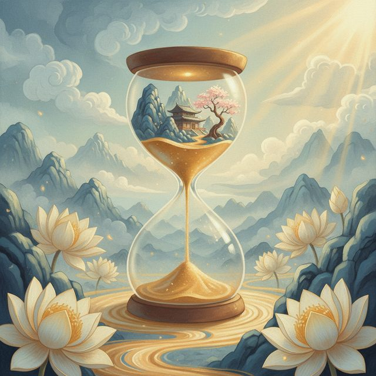
CH12-011
五分でできること
CH12-011
体に朝を告げる合図
CH12-011
体に手を添える感覚
CH12-011
無理をしない柔軟さ
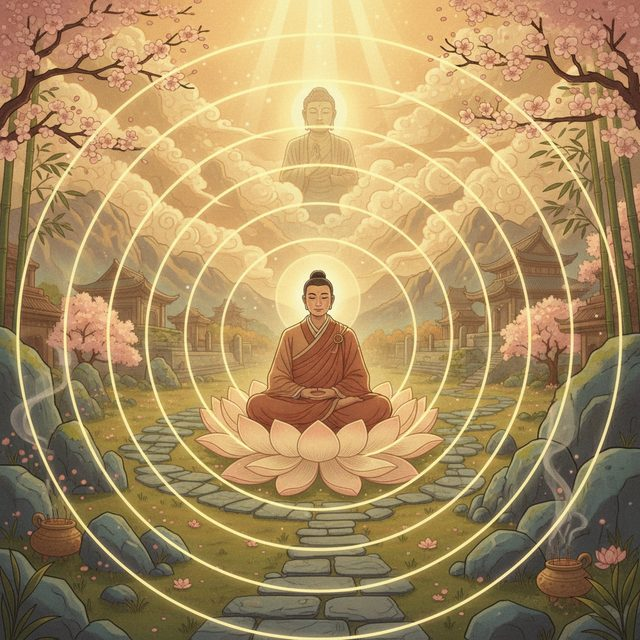
CH12-011
習慣が自然になるまで
CH12-011
昼間の光を浴びる
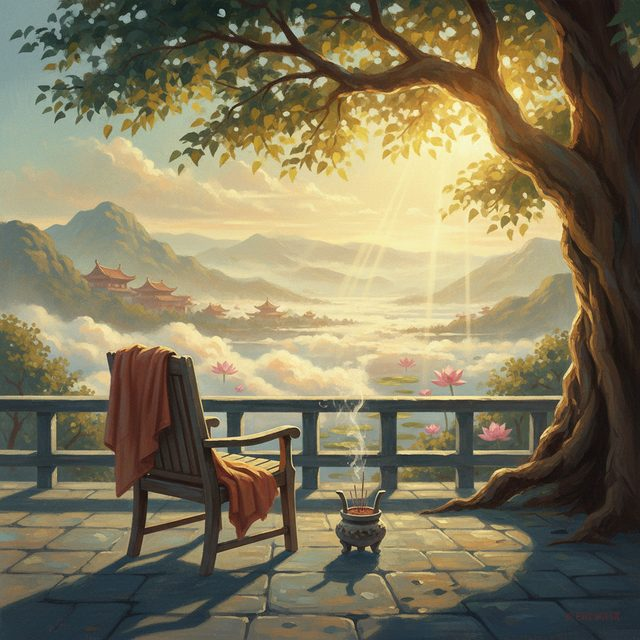
CH12-011
外で光を感じる時間
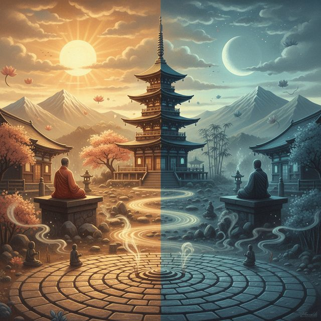
CH12-011
光のリズムを刻む
CH12-011
ほんの少しの体の動かし方
CH12-011
血の巡りと心地よい疲れ
CH12-011
一日の終わりの振り返り
CH12-011
今日できたこと探し
CH12-011
仏教の教えと執着の手放し
CH12-011
期待を手のひらから下ろす
CH12-011
過去は変えられない事実
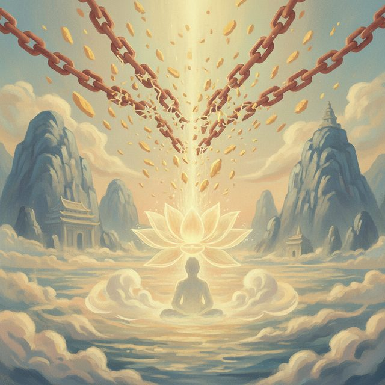
CH12-011
自己批判という執着
CH12-011
できた自分を認める
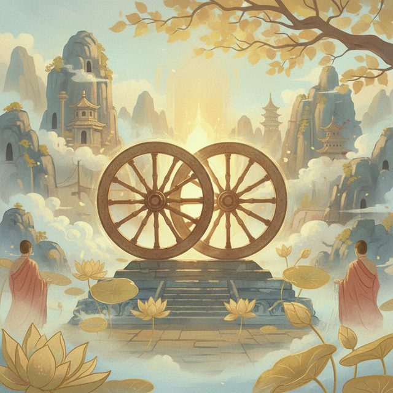
CH12-011
二つの習慣の両輪
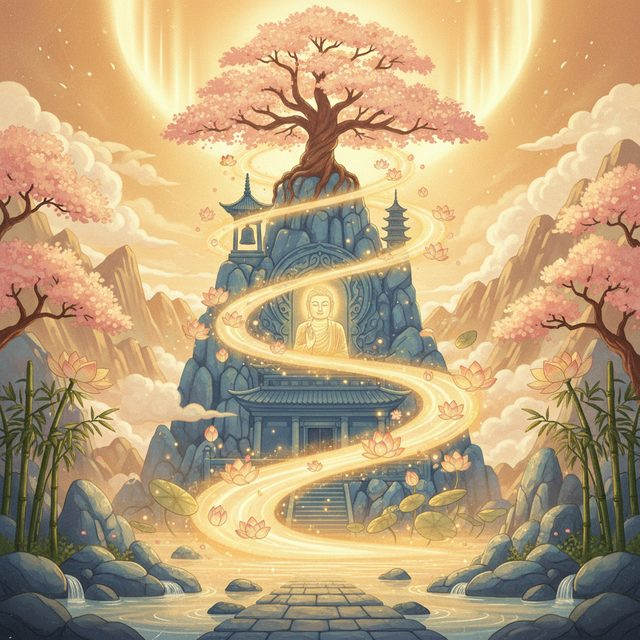
CH12-011
よい循環の生まれる仕組み
CH12-011
焦らないで試す
CH12-011
「よし」の積み重ね